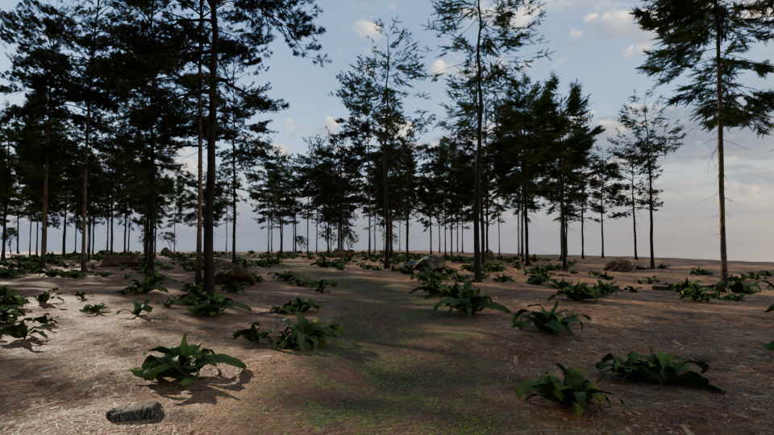

Gate 2 · Forest look: first test for your approval

Blender Cycles, path-traced, 48 samples, 1280×720, about 7 minutes on this laptop's CPU. 1,400 trees (6 fir/pine variants plus a broadleaf), 260 saplings, 5,000 grass clumps,
ferns, mossy rocks, deadwood. Low golden sun behind the trees, with light haze so the beams show. All assets are the approved Poly Haven CC0 pack.
What this is and isn't
- This is the look target: the light, density and mood the website forest must reach. It is not the website itself.
- On the site, the same assets run in real time. A sun that casts shadows from every branch, baked light for the soft bounce, and lighter tree models for distance. It will look close to this, but not identical.
- Still to come in this scene: the path needs to read more clearly, the foreground needs more light, and the bright band at the far horizon needs hiding. Then the structures and the 13 statues placed along the paths.
Where it started

Test 01: too sparse, too even, reads as a park.
What changed from 01 to 02: triple the tree density in natural clusters instead of an even grid; the forest now continues past where the eye can see;
saplings and grass fill the floor; the sun moved low and in front of you so the canopy is back-lit and shadows fall toward the viewer; and a light haze makes the light beams visible.